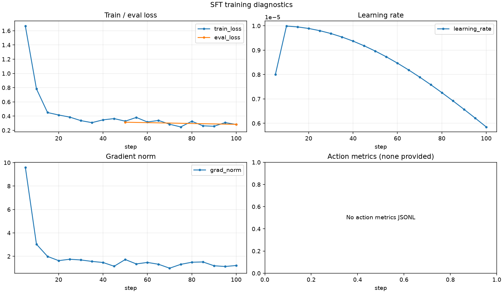

# SFT Training Report This report contains numeric metrics extracted from the trainer log. ## Run overview | Metric | Value | | --- | ---: | | Latest step | 100 / 216 | | Progress | 46.3% | | Latest epoch | 0.925926 | | Train runtime | - | | Steps / second | - | | Estimated remaining | - |  ## Metric summary | Series | Count | First | Best/min | Latest | | --- | ---: | ---: | ---: | ---: | | train_loss | 20 | 1.6662 | 0.2479 | 0.2822 | | eval_loss | 2 | 0.314097 | 0.284129 | 0.284129 | | learning_rate | 20 | 8e-06 | 5.85194e-06 | 5.85194e-06 | | grad_norm | 20 | 9.59892 | 0.988883 | 1.21778 | ## Action metrics No action metrics were provided.